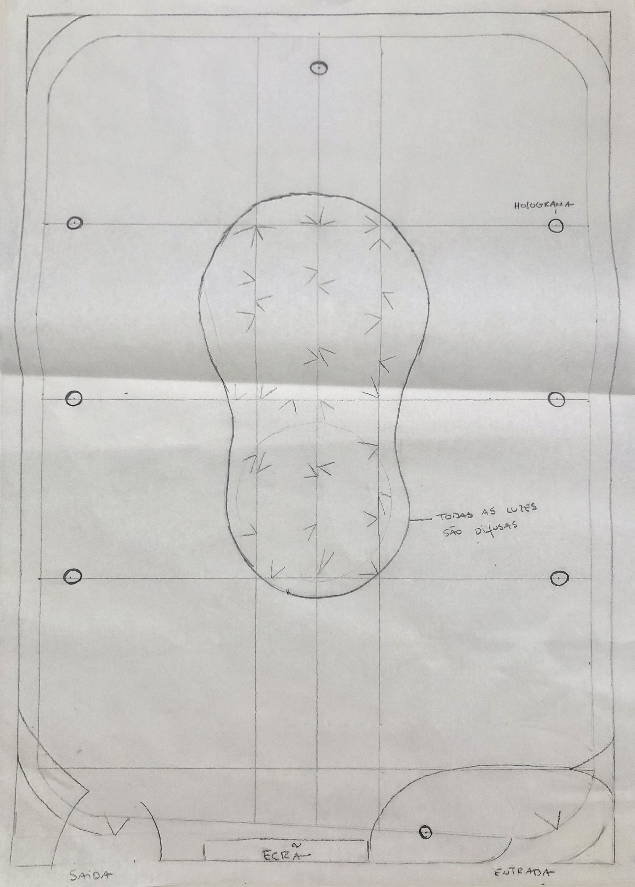
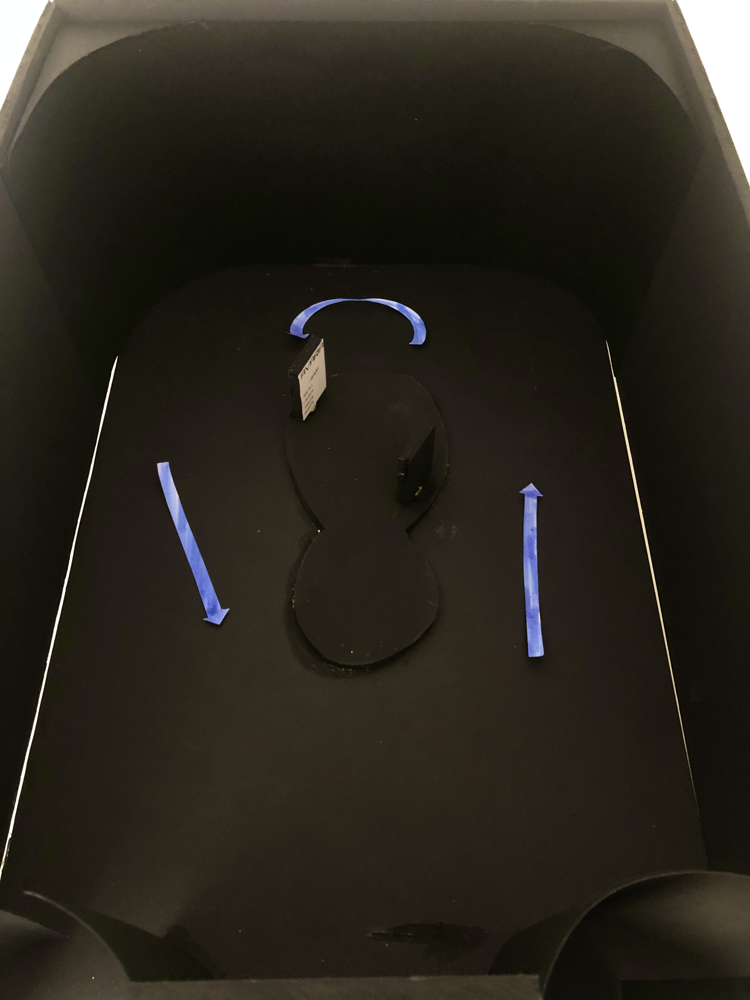
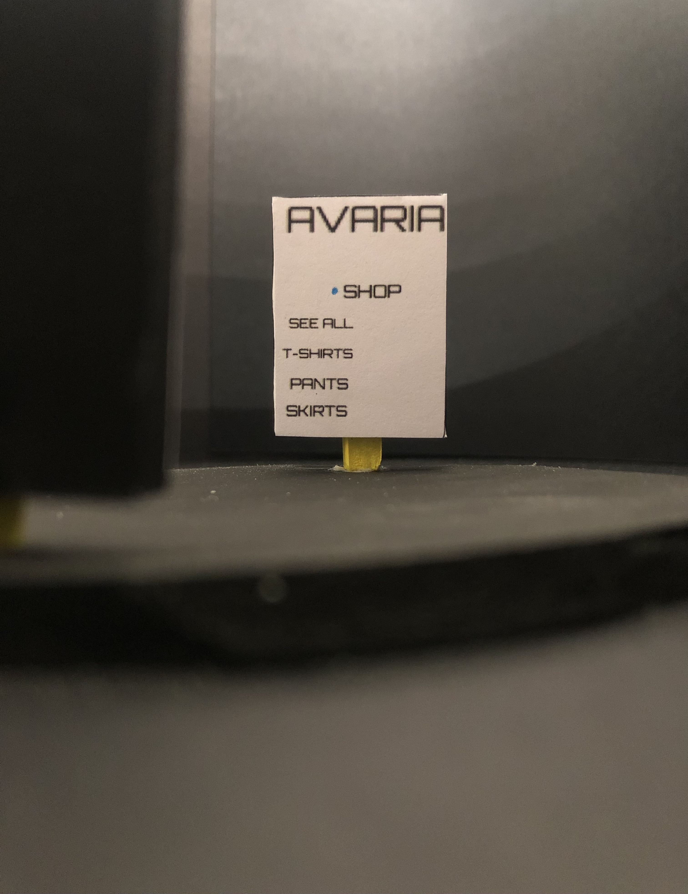
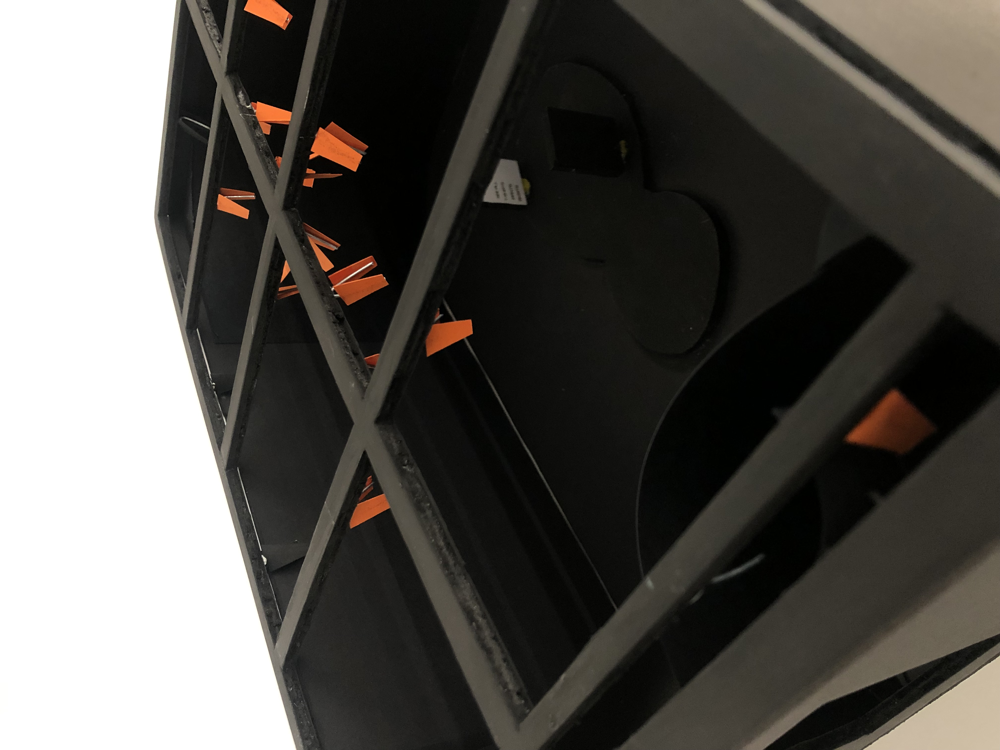
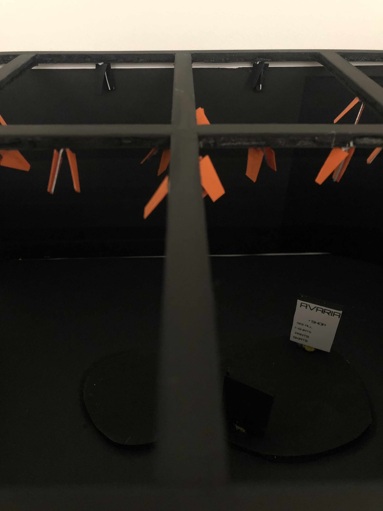
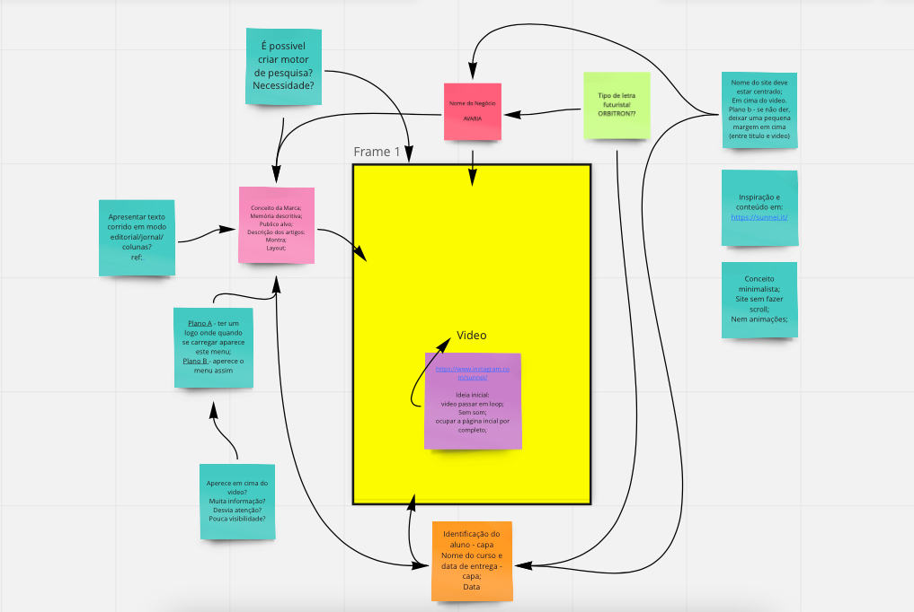

Fluxo de circulação:
Devido ao conceito da marca, optei pelo layout circular. Para incentivar que os clientes tenham contacto com todo o artigo, que seja um processo fluido e assim, excluir qualquer possibilidade de zona de conflito.
Inclui no centro da loja uma zona coberta, intitulada como zona de pagamento digital, onde também o fluxo é feito de forma circular.
Devido ao conceito da marca, optei pelo layout circular. Para incentivar que os clientes tenham contacto com todo o artigo, que seja um processo fluido e assim, excluir qualquer possibilidade de zona de conflito.
Inclui no centro da loja uma zona coberta, intitulada como zona de pagamento digital, onde também o fluxo é feito de forma circular.



Luzes:
A grelha de luzes retangulares suporta cerca de 7 projetores holograma e 15 focos de iluminação.
A luz escolhida para iluminar a entrada e saída da loja mais o centro, é luz difusa, pois o espaço não pede que esteja presente uma luz forte/direta. Dessa maneira, a intensidade da luz fica mais suave sem que perca a capacidade de iluminar o ambiente pretendido.
A grelha de luzes retangulares suporta cerca de 7 projetores holograma e 15 focos de iluminação.
A luz escolhida para iluminar a entrada e saída da loja mais o centro, é luz difusa, pois o espaço não pede que esteja presente uma luz forte/direta. Dessa maneira, a intensidade da luz fica mais suave sem que perca a capacidade de iluminar o ambiente pretendido.


Site:
Desenhei um site que não fugisse ao conceito base da marca e torná-lo minimalista e o mais intuitivo possível.
Para a font page baseei-me em escolher um tipo de letra mais futurista e que se destacasse.
Em termos visuais/animação, optei por pesquisar conteúdo no site e redes sociais da marca Sunnei, e selecionei um vídeo onde prevalece a percepção de que o modelo está a elevar e a passear quem está a navegar naquela página.
Na barra de navegação está intitulada com o nome de cada tópico necessário abordar neste trabalho, onde abre novamente outra página para mostrar toda essa informação.
Desenhei um site que não fugisse ao conceito base da marca e torná-lo minimalista e o mais intuitivo possível.
Para a font page baseei-me em escolher um tipo de letra mais futurista e que se destacasse.
Em termos visuais/animação, optei por pesquisar conteúdo no site e redes sociais da marca Sunnei, e selecionei um vídeo onde prevalece a percepção de que o modelo está a elevar e a passear quem está a navegar naquela página.
Na barra de navegação está intitulada com o nome de cada tópico necessário abordar neste trabalho, onde abre novamente outra página para mostrar toda essa informação.
